By Elizabeth Dunlop Richter
Crowds were loudly cheering, standing with arms pumping, busy taking cell phone pictures, and many were dancing in the aisles. This was surprising in a theater where under normal conditions photography is prohibited, and audiences watch respectfully. But this was no ordinary production. This was the October 2nd Jeff Awards for Equity Theaters, the 55th annual celebration of excellence in Chicago’s theater community of actors, directors, playwrights and crews who make Chicago Equity theater possible. A packed Drury Lane Theatre in Oak Brook welcomed an audience of an estimated 600 to see who among 214 nominees from 32 artistic and technical categories had won one of the highly coveted 46 Equity Jeff Awards.
|
|
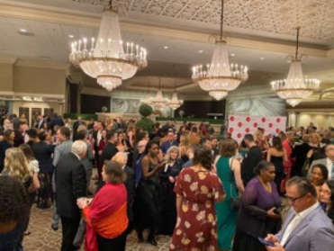 Nominees, media and fans pack Drury Lane Theatre |
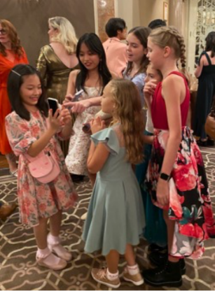
Children from Paramount Theatre’s “Sound of Music” cast
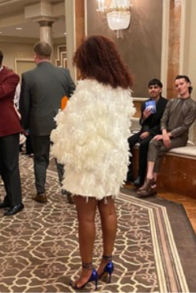 Feathered Finery |
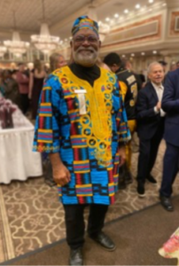 Jeff Commitee Member Preston Cropp |
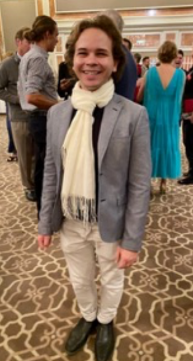 Actor Frankie Leo Bennett |
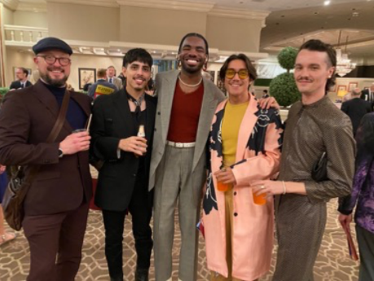 Second City team members and guests, including Jeff winner Evan Mills (pink coat) |
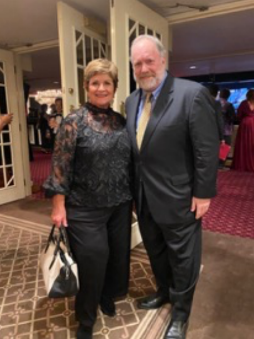 Denise and Ed Tracy, journalist |
The Joseph Jefferson Committee produces two awards shows a year, one for Non-equity theaters in the spring and the fall event for Equity theaters (who operate under the Equity union contract). The latter tend to be the larger theaters; awards are given for both “Midsize” and “Large” producing companies, based on budget level. But large or small, times are tough in the theater world. COVID and the wide variety of other entertainment options have had an impact. Subscriptions are down, and audiences are not bouncing back to pre-pandemic levels.
At a time when theaters across the country are struggling to get audiences in seats, you’d never know it from the enthusiastic Jeff Awards audience – the energy was visceral! Don McNuff, the director of “The Who’s Tommy” musical (since its creation with Pete Townsend in 1992), and one of the Goodman Theater’s Jeff Award winners Monday night, told Jeff committee member Paulette Petretti that “he has been to award ceremonies all over the country and in Canada and in England and he has never seen anything like this. It was the best…He said he was overwhelmed by the spirit of the crowd and how the audience members recognized the talents of other companies.”
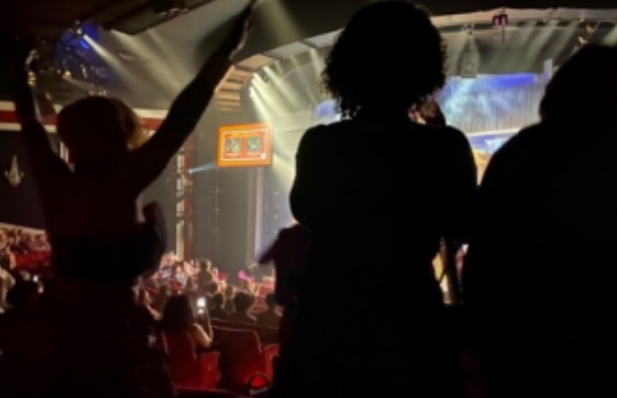
Audience members on their feet cheering award winners
The Goodman Theatre was in fact the big winner with 12 Jeff Awards, nine for “The Who’s Tommy” and three for “The Cherry Orchard.” Close behind with eight Jeff Awards was Theatro Vista’s original production of “The Dream King.” Other winning theaters with three awards each were American Blues Theatre (“Fences”), Rivendell Theatre (“Motherhouse”), and Porchlight Music theatre (“Cabaret”). Additional winning companies included Writers Theatre, The Second City, A Red Orchid Theatre, Paramount Theatre, Chicago Shakespeare Theater, Mercury Theater Chicago, Shattered Globe Theatre, Drury Lane Productions, Lookingglass Theatre Company, Court Theatre, and PG Productions. Details of all the awards are on the Jeff Committee website, www.jeffawards.org.
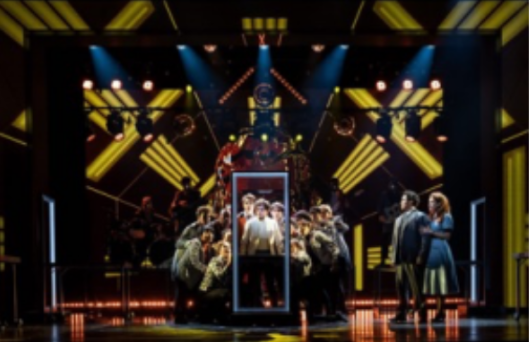
“The Dream King”
Theaters themselves were honored, as pairs of award presenters representing Chicago area theaters gave capsule histories of their own theaters, highlighting how long they’d been in existence. The Goodman, founded in 1922, is at 81 years old the oldest currently active nonprofit theater organization in Chicago.
If the number and variety of awards itself didn’t give one a sense of the breadth of excellent theatrical talent in Chicago, the 55th Jeff Awards show itself was ample evidence. In the past, the announcer was just a voice, but this year the show producers wisely cast Chicago actor and Jeff recipient Janet Ulrich Brooks (a nominated actor herself this year for “The Cherry Orchard”) in the announcer role this year on stage, and as host, the award-winning Chicago actor, director and voiceover talent, Lorenzo Rush, Jr. – both were obvious crowd favorites who kept the 3 1⁄2 hour show moving with energy and humor.
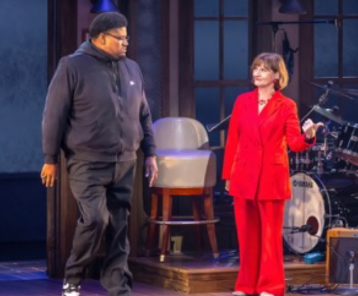
Lorenzo Rush, Jr. and Janet Ulrich Brooks Brett Beiner Photography
Each set of award announcements was interspersed with well-crafted selections from 14 nominated plays and musicals, from Marriott’s “Damn Yankees,” to Court Theatre’s “Gospel at Colonus” to the Goodman’s “The Who’s Tommy” to Drury Lane’s “Chorus Line.” Lively and well-paced, the show surpassed many awards shows we’ve all yawned through in the past.
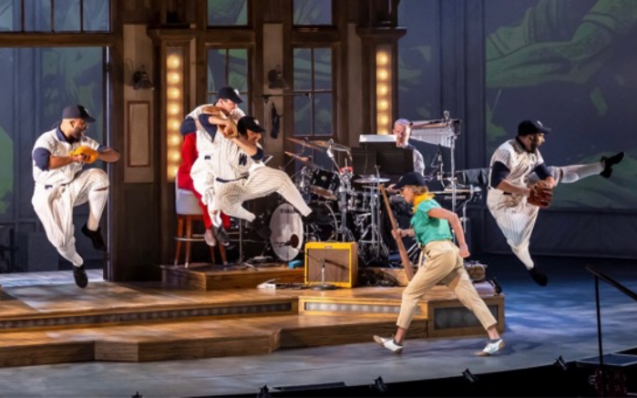
“Damn Yankees” Brett Beiner Photography
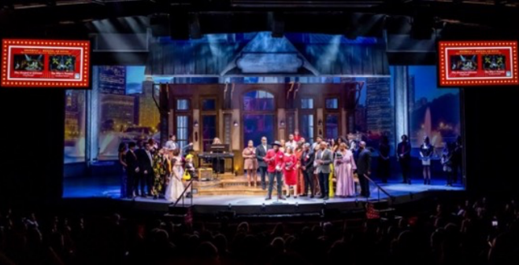
Winning Ensembles from “The Who’s Tommy” and “Gospel at Colonus” Brett Beiner Photography
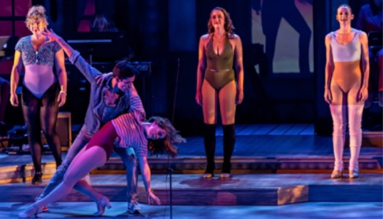
“A Chorus Line” Brett Beiner Photography
Besides the host and announcer, one luminary in the theater world made more appearances on stage than almost any other. Robert Falls, the retiring artistic director of the Goodman Theatre (1986-2023) was honored with the Equity Special Award for “his visionary direction and impact on Chicago theater.” Falls credited his initial ten years with Wisdom Bridge Theatre while launching his career. Winner of numerous awards during his four decades of directing, Falls returned to the stage to accept the Jeff Award for directing “The Cherry Orchard” and again to join “The Cherry Orchard” team in accepting the Jeff Award for Production, Large Play.
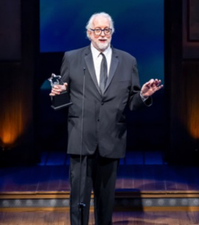
Robert Falls Brett Beiner Photography
Of special note, was the Jeff Committee’s first presentation of the Jeff Impact Fellowship, a gift of $10,000 to mid-career artists of color in the Chicago area. Supported by a generous gift to the Committee, the Fellowships will be awarded annually for a minimum of the next five years. This year’s winners were Satya Chavez and Terry Guest; three runners-up were also granted awards of $250.00.
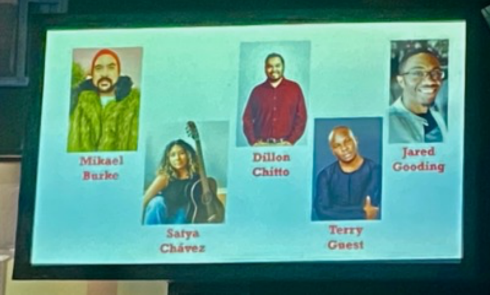
Jeff Impact Fellowship winners and runners-up
The 2023-24 Equity season is already well underway. As a Jeff Committee member (full disclosure), I have already seen a number of contenders for potential nominees and award winners for next October’s Equity ceremony. Whether at a large theater like the Goodman or a midsize theater like Rivendell, Chicago is blessed with some of the country’s best theatrical talent. And whether you choose Equity or Non-equity productions, tear yourself away from your favorite streaming show, and you will be rewarded with the rich and memorable experience of live theater. Just follow the instructions on the Steppenwolf T-shirt: GO SEE A PLAY!
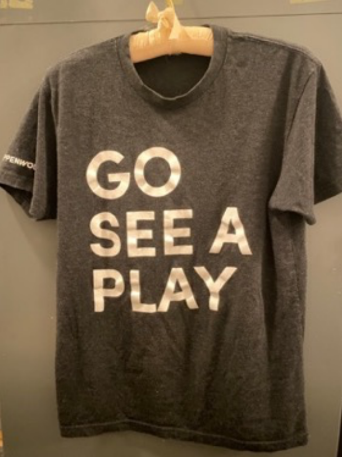